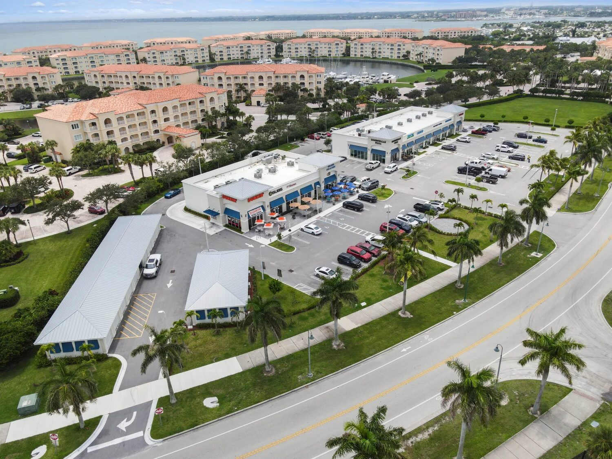

Florida is the hardest climate on a commercial envelope in North America. Daily humidity cycles swing from 60 to 95 percent. Wind-driven rain hits walls at pressures that rival some pressure washers. Salt aerosol travels miles inland from both coasts. UV exposure is among the highest in the continental United States. A commercial window assembly that would last thirty years in Chicago can fail in five here if any of the three weatherproofing layers is poorly specified or badly installed. The product on the wall is only part of the answer. The flashing, sealant, and finish - and the craftsmanship that ties them together - are what actually determine whether your building stays dry and your envelope stays intact.


The Three Failure Layers
Every commercial window assembly in Florida has three distinct weatherproofing layers, each with its own failure mode. When owners call about leaks, the failure is almost always in one of these three layers, and diagnosis starts with understanding which one.
Layer 1: Head, Jamb, and Sill Flashing
The flashing system is the primary water management layer. It routes any water that gets past the exterior surface back out to the cladding face before it reaches the interior. Flashing failures cause the majority of commercial window water intrusion complaints in Florida, and they typically show up as staining on the interior drywall below or beside the opening.
Best practice for commercial windows in Florida follows a clear hierarchy: sill flashing first, with end dams and back leg upturns; jamb flashing lapped over the sill; head flashing lapped over the jambs with a proper step-back from the cladding so water weeps to the face. The head flashing step-back is one of the most commonly missed details. Without it, water pools at the head and eventually migrates inside.
Layer 2: Sealant Joints
Sealants close the perimeter gap between the window frame and the rough opening substrate. They are a secondary water barrier - the flashing should keep water out even if the sealant fails - but in practice, many Florida installations rely too heavily on sealant because the flashing wasn't detailed correctly.
Sealant chemistry matters. Silicone sealants (ASTM C920, Class 50 movement) are the preferred choice for exterior glazing perimeter in Florida because they tolerate UV exposure, handle significant thermal movement, and maintain adhesion through 20+ years of weather cycling. Urethane sealants cost less and bond aggressively but chalk and degrade under sustained UV in under 10 years - fine for concealed or shaded conditions, but a recurring failure point on sun-exposed facades.
Layer 3: Frame Finish
The aluminum frame itself is the third layer. Bare or anodized aluminum in coastal Florida deteriorates faster than most architects anticipate. Pitting starts within 2-3 years of salt exposure. Powder coat finishes are better but still rated only to AAMA 2604.
For any commercial project within five miles of saltwater - essentially the entire Florida peninsula south of Ocala - the finish spec should be AAMA 2605 (70% PVDF / Kynar 500 fluoropolymer). This is the only finish with enough UV and salt resistance to hold color and gloss for 20-plus years in a coastal environment. The cost premium over AAMA 2604 is 5-10 percent of the frame cost. It is the single highest-leverage spec decision for long-term envelope durability.
Sealant Selection: Silicone vs Urethane vs Hybrid
Not all exterior sealant is equivalent. A good glazing scope specifies sealant chemistry, manufacturer, and substrate-specific primer - not just "seal perimeter with high-quality sealant" language that some residential specs carry forward onto commercial.
| Sealant Type | UV Resistance | Movement Capability | Typical Life (FL Coastal) | Best Use |
|---|---|---|---|---|
| Structural Silicone (Dow 995, GE SSG4000) | Excellent | ±50% | 25-30 years | Curtainwall structural glazing |
| Weatherseal Silicone (Dow 791, GE SCS9000) | Excellent | ±50% | 20-25 years | Perimeter sealant, exterior exposure |
| Polyurethane (Sika, Tremco) | Fair | ±25% | 8-12 years | Concealed joints, substrate bonding |
| Silyl-Terminated Polymer (hybrid) | Good | ±25% | 12-15 years | General commercial perimeter |
| Acrylic Latex | Poor | ±12.5% | 3-5 years | Interior only - never exterior |
For exterior perimeter glazing on any Florida commercial project, weatherseal silicone is the specification that holds up. We see projects where a GC value-engineered silicone down to urethane to save a few thousand dollars, only to face callbacks and remediation costs in year seven or eight. The savings don't pencil out.
Flashing: Tape vs Liquid-Applied vs Metal
Three flashing strategies are common on commercial Florida projects, and each has appropriate use cases.
Self-Adhered Flashing Tape
Butyl-based self-adhered flashing tape (4-9 inches wide) is the most common flashing method on commercial punched-opening projects. Products like Grace Vycor Plus, Protecto Wrap, and Tyvek FlexWrap install cold, bond aggressively to primed substrates, and handle normal thermal movement. They work well on openings up to about 8 feet wide. Above that, the material's limited movement tolerance can lead to tearing at corners.
Liquid-Applied Flashing
Fluid-applied flashing membranes (Tremco ExoAir 230, Sto Gold Fill, Prosoco R-Guard FastFlash) trowel or brush onto rough openings, cure to a seamless rubberized membrane, and work well on openings of any size and complex geometry. They are more expensive per LF but more forgiving on irregular substrates and skip the lap-and-seam challenges of tape. For large commercial openings or curved geometry, liquid-applied is the better choice.
Metal Head Flashing
Above punched openings, a separately detailed metal head flashing (typically 24-gauge galvanized or stainless) provides a physical step-back that directs water to the face of cladding. On stucco and stone veneer systems especially, this detail is code-enforced in many Florida jurisdictions and non-negotiable on quality commercial work. Skipping it is a primary source of head leaks.
Why Installation Quality Beats Product Quality
Owners often focus on product specifications - which window brand, which glass package, which warranty - and under-weight installation quality. In Florida, installation quality matters more for long-term weather performance than the product itself. A premium impact window installed with poor flashing detailing will leak before a mid-grade window with textbook flashing does.
This is one of the major differentiators between commercial and residential glazing. Commercial glazing subs work to tight tolerances, know the flashing sequence cold, and train crews specifically on the interaction between products and envelope detailing. Residential contractors often treat flashing as "whatever the framer left us with" rather than a designed assembly.
The Pre-Glazed Advantage
One specification detail that reduces weatherproofing risk is factory pre-glazing. Pre-glazed storefront and window systems arrive at the jobsite with glass already set into the frame, gaskets and interior seals installed, and the unit tested for air-water performance in factory conditions. Stick-built systems are cut to length, assembled, and glazed on the jobsite - in whatever temperature, humidity, and dust conditions prevail that day.
Factory pre-glazing happens in controlled humidity and temperature, with trained glaziers using the same procedures on unit after unit. Field glazing on a Florida afternoon at 92°F and 80 percent RH is a fundamentally different quality-control situation. ACG installs ESWindows ES-8000 storefront and ES-9000 entrances pre-glazed as standard. Projects like the Wave Food Hall in Cocoa Beach and KLUS Lighting in Vero Beach used this approach specifically because coastal exposure puts a premium on seal integrity.
Coastal-Specific Considerations
Projects within a mile of the Atlantic or Gulf coastline require additional weatherproofing rigor. Salt spray cycling drives corrosion at any dissimilar metal contact, so specify stainless steel fasteners (316 grade) throughout, and isolate aluminum from steel anchors with neoprene or EPDM bushings. UV at the coast is intense - test data on Class 2 coatings can overstate real-world life. Stick to AAMA 2605.
The Palm Beach County corridor, the Miami-Dade HVHZ zone, and the Tampa Bay Gulf exposure all qualify. On coastal condo and hotel projects especially, the envelope spec should be written by someone who has seen 20-year-old installations fail and knows what to change.
A Quick Weatherproofing Spec Checklist
When reviewing commercial glazing submittals for Florida projects, these items should appear explicitly in the scope:
- Sill, jamb, and head flashing strategy (tape, liquid, or metal) identified by location
- Metal head flashing with step-back on all punched openings
- Weatherseal silicone (ASTM C920 Class 50) specified by product name for exterior perimeter
- Sealant primer product for each substrate (CMU, stucco, concrete, wood)
- AAMA 2605 PVDF finish on all exterior aluminum within 5 miles of coast
- 316 stainless fasteners for coastal projects
- Factory pre-glazing for storefront and entrance systems where applicable
- Air-water testing procedure (AAMA 501.2 field testing on large projects)
- Mockup and first-unit inspection before full-scale installation
This list is what separates a commercial glazing submittal that holds up long-term from one that generates warranty calls. On projects like the Lake Park Innovation Center and Dale Mabry Retail in Tampa, this level of detail is baked into the scope before the first extrusion ships.
Ready to get started?
ACG is a CGC-licensed Florida commercial glazing subcontractor (CGC1531993) headquartered in West Palm Beach. Commercial Division 08 scope, statewide. Our envelope detailing is calibrated to Florida's climate - factory pre-glazing where the spec allows, AAMA 2605 finishes as standard on coastal work, and flashing sequences that match real field conditions. Send plans and we return a detailed scope inside 48 hours.